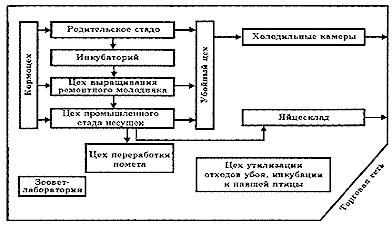
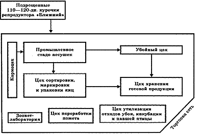

··· Технология производства пищевых яиц
В современном промышленном птицеводстве определилось два основных организационно-технологических варианта производства яиц. Первым возникло производство пищевых яиц, в технологический цикл которого были включены все основные звенья, обеспечивающие в пределах одного хозяйства получение конечно го целевого продукта. Такими были птицефабрики с замкнутым циклом производства, осуществляющие производство инкубационных яиц, вывод ремонтного молодняка, его выращивание и комплектование промышленного стада; обеспечение взрослого поголовья и молодняка кормами, технологическим и ветеринарным обслуживанием. Получение пищевых яиц, первичная их переработка, хранение и реализация продукции завершали основной производственный цикл. Проводимая утилизация отходов позволяла часть их использовать снова в корм птице, а другую часть как удобрение в садоводстве и земледелии.
Схема взаимосвязи цехов при производстве яиц по
замкнутому циклу

Второй организационно-технологический вариант производства возник на более позднем
этапе развития промышленного птицеводства, когда углубилась специализация хозяйств,
возникли и укрепились межхозяйственные связи, - появились птицефабрики с незамкнутым
циклом производства пищевых яиц. На этих птицефабриках нет цеха родительского
стада, нет инкубации, иногда нет и выращивания ремонтного молодняка; фабрики,
как правило, специализируются только на содержании и обслуживании взрослых гибридных
несушек . Ремонтных курочек в 110-120-дневном возрасте завозят из других хозяйств.
В нашем примере завоз подрощенного молодняка осуществляют из репродуктора "Ближний".
Схема производственной взаимосвязи цехов
при незамкнутом цикле производства яиц
На этих птицефабриках нет цеха родительского стада, нет инкубации, иногда нет
и выращивания ремонтного молодняка; фабрики, как правило, специализируются только
на содержании и обслуживании взрослых гибридных несушек. Ремонтных курочек в
110-120-дневном возрасте завозят из других хозяйств. В нашем примере завоз подрощенного
молодняка осуществляют из репродуктора "Ближний".
 Рассмотрим поцеховую специализацию на птицефабриках и основные технологические
процессы и нормативные требования, выполняемые специфично в каждом цехе. Технологии
цеха родительского стада и инкубации яиц, предусмотренные в производственном
цикле на птицефабриках, работающих по замкнутой схеме производства, представлены
в поцеховой специализации, начиная с выращивания молодняка.
Цех выращивания молоднякаЭтот цех является самым сложным и весьма важным технологическим звеном в производстве пищевых яиц по замкнутому технологическому циклу. Конечным целевым продуктом цеха выращивания являются подрощенные до 17-недельного возраста ремонтные курочки, которые предназначаются для комплектования цеха промышленных несушек. Выращивание молодняка осуществляется как напольно, так и в клетках. Предпочтительнее клеточное выращивание, в том случае, если ремонтные курочки предназначаются в цех, где несушки содержатся в клеточных батареях. Ниже на рисунках показано поение молодняка, которое обеспечивается тремя ниппелями с каплеулавливателями и одной чашечкой в каждой клетке. Мощности цеха выращивания и количество одновозрастных цыплят в партии соответствуют потребности промышленного стада в ремонтном молодняке, количеству и численности партий при комплектовании. Например, для комплектования одного 20-тысячного птичника требуется посадить на выращивание одной партией 26 тысяч курочек. А если одновременно комплектуется 2 и 3 таких птичника, то соответственно возрастает количество выращиваемого молодняка. При 10-11-кратном комплектовании промышленного стада нетрудно определить, сколько потребуется выращивать ремонтных курочек в течение всего года
Примерный расчет выхода 1000 голов ремонтных курочек для комплектования промышленного стада (из расчета 1,3 суточных курочки на 1 взрослую)
Цех промышленного стада курНа птицефабрике яичного направления цех промышленного стада кур является основным звеном (здесь производят конечный продукт - пищевые яйца), все остальные вспомогательные. Так, цеха родительского стада, инкубации и выращивания молодняка работают с одной целью - укомплектовать промышленное стадо; кормоцех должен накормить стадо; остальные цеха перерабатывают продукцию, утилизируют отходы. Зооветеринарная лаборатория обеспечивает технологическую синхронность подготовки помещений, кормов и птицы, обеспечивает необходимый уровень кормления, содержания и выращивания молодняка, сохранности поголовья и производства продукции. Требования к помещениям промышленного стада и их подготовка к посадке ремонтного молодняка такие же, как и для родительского стада, нормативы содержания кур яичного кросса приведены в табл. 58. Промышленных кур в течение года комплектуют многократно по технологическому графику. Количество партий и молодок в каждой из них устанавливают с учетом объема производства и вместимости помещений. 17-недельный ремонтный молодняк для комплектования отбирают в цехе выращивания и помещают в ящики или клетки для транспортировки. Очень важно не переформировывать сложившиеся сообщества, сохранять их состав при перевозке и комплектовать клетки в помещениях промышленного стада птицей, выросшей вместе в одной группе. Это сохранит сложившиеся у них отношения и уменьшит стрессирование птицы в связи с перемещением в другие помещения и клеточные батареи. Нормативы содержания кур промышленного
стада яичного кросса в клеточных батареях
Выделение птицей тепла, газов, помета, а также вредных газов из помета и допустимая загазованность воздуха имеют показатели аналогичные данным по родительскому стаду Значительное повышение (30-33 °С) или понижение (менее 5 °С) температуры в помещении отрицательно сказывается на жизнеспособности птицы, ее продуктивности и конверсии корма. При повышении температуры куры много пьют. Так, если при температуре 18 °С на 1 весовую часть корма птица потребляет две части воды, то с достижением температуры 35 °С соотношение корма к воде становится 1:4,7; соотношение корма к помету тоже расширяется, если в первом случае 1:1,5, то во втором 1:2,6. Птицу периодически осматривают в клетках и отбраковывают плохих несушек. При этом обращают внимание на признаки, приведенные. Для содержания кур-несушек промышленного стада используют преимущественно металлические многоярусные клеточные батареи БКН-1 (19 гол/м2 по 7 гол. в клетке), ККТ (Венгрия, 22 гол/м2, 4 гол. в клетке), БКН-3 (по 5 гол. в клетке), БКН-Ф-4 (по 7 гол. в клетке), L-134, БКН-3 А (более 26 гол/м2); одноярусные батареи ОБН-1, АПЛ-14,5; двухъярусные батареи АПЛ-30, ОБН-2. Обобщая преимущества содержания кур в клеточных батареях, можно отметить наиболее существенные из них: значительное увеличение плотности посадки птицы на 1 м2 площади пола птичника - 20-26 голов в многоярусных и 11-12 - в одноярусных батареях; размещение несушек небольшими сообществами в клетке - по 4-7 голов; механизация и автоматизация производственных процессов по обслуживанию птицы. Дополнимтельная информация - в Харькове по тел. (057) 752-80-20,
757-23-93; |
||||||||||||||||||||||||||||||||||||||||||||||||||||||||||||||||||||||||||||||
Все статьи раздела:
|
| |
|||
| © НПП "КИАТОН", 2004-2007г | |||